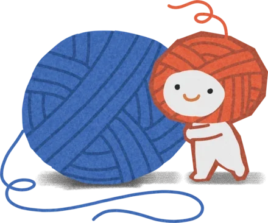
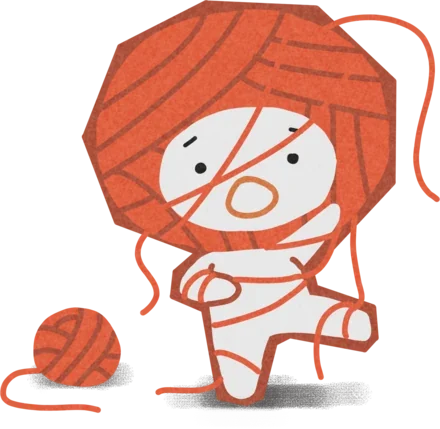
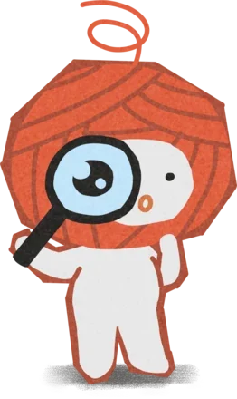
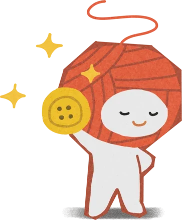

Trove figures out your personality from what you do, so it never asks you a single question.
A quiz can only hand back what you already told it about yourself.
Most apps that try to understand you start by making you describe yourself, like a LinkedIn bio or a Hinge profile. Trove doesn’t. Every day there’s a short interactive story (we call them tangles) where you make choices that don’t have an obvious right answer. Trove looks at what you chose, writes you a short personality read, and builds up a profile of you over time, a bit like how a friend gets to know you.
That’s easy to describe and hard to build. I joined in April as the first hire on this version of Trove. The idea had been tested once, as a Valentine’s Day release in February, and what existed was small: eight pages, sixteen components, and a profile that was still only a mockup. There were no writers and no animators, so over eighteen weeks I designed and built the systems that do those jobs: the pipeline that writes and checks the stories, the story cards, the mascot and the profile.
A whole first session: everything before the game, the game itself at four times speed, and the personality read that follows. It opens by telling you it starts with what you do, offers a self-description step where every field has an “I don’t know yet”, and asks you to make an account only after it has already told you something about yourself.
A new story every day means a new real dilemma every day. The stories are written by language models, and another model checks them. The checker I inherited scored ten qualities and then threw nearly all of that away to give one answer: publish, yes or no. The problem is that a story can be not broken and still have no real dilemma in it, and if there’s no real choice to make, your choice says nothing about you. With only pass or fail, nothing pushed the stories to get better, and Trove would slowly turn back into a quiz with nicer typography.
So I built a quality score out of the ten numbers we were already throwing away. It cares most about a story’s weakest moment, and about whether two different people playing it actually end up somewhere different.
The pipeline that makes a story is the most complicated thing I worked on. Someone gives it a one line idea and a category. Before a person reads a word of the result, it has been played start to finish by a cast of made-up players inside the real app, every playthrough has been reviewed, and it has been fixed automatically a few times if it needed it. Most stories come out playable on the first try.
A premise goes in
One line of intent and a category. That is the entire human input at this end.

It gets played, for real
A cast of invented players plays it start to finish inside the real product, not a rehearsal of it.

Every playthrough is read back
Every playthrough gets reviewed. The weakest moment decides whether the story passes, because that’s the part a writer can actually fix.

A person still says yes
Passing means it works, not that it’s good, so a person approves every story before players see it.

Steps two and three repeat a limited number of times: a fixed draft gets played again before it can move on. Once a story is live, a player’s choices become their read, the read nudges their trait scores, and their profile updates every seventh day they play.
Checking before building also saved us a feature. “Stop the stories repeating themselves” was on the roadmap and we all assumed it was a real problem, so I measured it first: 139 tangles, 950 pairs of text real players had been shown, and one actual duplicate. We didn’t build it.